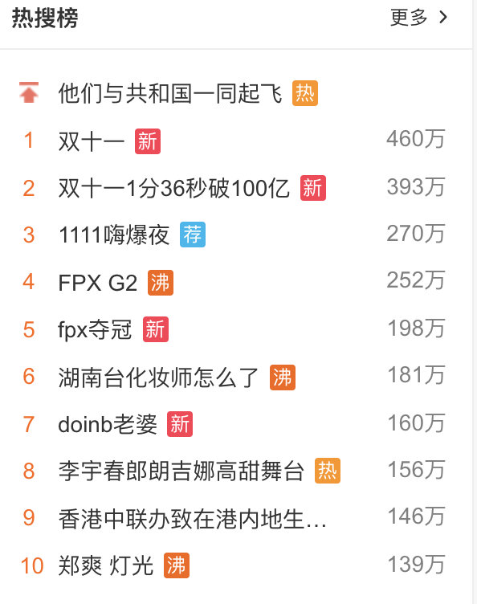

原文连接:https://www.cnblogs.com/aobing/p/11834545.html
你知道的越多，你不知道的越多
点赞再看，养成习惯
前言
Redis在互联网技术存储方面使用如此广泛，几乎所有的后端技术面试官都要在Redis的使用和原理方面对小伙伴们进行360°的刁难。作为一个在互联网公司面一次拿一次offer的面霸（请允许我使用一下夸张的修辞手法），打败了无数竞争对手，每次都只能看到无数落寞的身影失望的离开，略感愧疚，在一个寂寞难耐的夜晚，我痛定思痛，决定开始写《吊打面试官》系列，希望能帮助各位读者以后面试势如破竹，对面试官进行360°的反击，吊打问你的面试官，让一同面试的同僚瞠目结舌，疯狂收割大厂offer！
絮叨
男儿何不带吴钩，收取关山五十州 FPX 🐂B，LPL两年连冠🏆 🐂B！
看着金色的雨落下，我到窗边，发现天有点蓝，风有点绵，我的眼角又湿了!
最近双十一讲道理有点忙的说，直接肝爆，就是这样作为暖男的我，还是给你们挤出时间搞出终章，忍不住给自己点赞👍
放个双十一照片证明真的忙，希望别取关！！！
现在你们在看的时候，我应该还在睡觉哈哈。困🛌
之前跟你们说的，限流，降级，是不是在双十一又应验了，下单接口其实没挂，牺牲部分用户体验，保住服务器，你多点几下是可以成功的，等流量高峰过去了，所有的用户全部都恢复正常访问，服务器也没啥事。
去年退款接口被打崩了，今年阿里明显也聪明了很多。
正文
上几期吊打系列我们提到了Redis的很多知识，还没看的小伙伴可以回顾一下
那提到Redis我相信各位在面试，或者实际开发过程中对基本类型的使用场景，并发竞争带来的问题，以及缓存数据库双写入一致性的问题等，我们有请下一位受害者。
面试开始
一个大腹便便，穿着格子衬衣的中年男子，拿着一个满是划痕的mac向你走来，看着快秃顶的头发，心想着肯定是尼玛顶级架构师吧！但是我们腹有诗书气自华，虚都不虚。（这不是第一篇文章的面试官么？）

小伙子，你还记得我在第一章里面问过你，Redis有几种基础数据类型么？
嗯嗯，帅气的面试官，我肯定记得，没齿难忘！！！
我特么谢谢你，都四面了还不给Offer！

那你能说一下他们的特性，还有分别的使用场景么？
行吧，那我先从String说起。
String：
这是最简单的类型，就是普通的 set 和 get，做简单的 KV 缓存。
但是真实的开发环境中，很多仔可能会把很多比较复杂的结构也统一转成String去存储使用，比如有的仔他就喜欢把对象或者List转换为JSONString进行存储，拿出来再反序列话啥的。
我在这里就不讨论这样做的对错了，但是我还是希望大家能在最合适的场景使用最合适的数据结构，对象找不到最合适的但是类型可以选最合适的嘛，之后别人接手你的代码一看这么规范，诶这小伙子有点东西呀，看到你啥都是用的String，垃圾！

好了这些都是题外话了，道理还是希望大家记在心里，习惯成自然嘛，小习惯成就你。
String的实际应用场景比较广泛的有：
缓存功能：String字符串是最常用的数据类型，不仅仅是Redis，各个语言都是最基本类型，因此，利用Redis作为缓存，配合其它数据库作为存储层，利用Redis支持高并发的特点，可以大大加快系统的读写速度、以及降低后端数据库的压力。
计数器：许多系统都会使用Redis作为系统的实时计数器，可以快速实现计数和查询的功能。而且最终的数据结果可以按照特定的时间落地到数据库或者其它存储介质当中进行永久保存。
共享用户Session：用户重新刷新一次界面，可能需要访问一下数据进行重新登录，或者访问页面缓存Cookie，但是可以利用Redis将用户的Session集中管理，在这种模式只需要保证Redis的高可用，每次用户Session的更新和获取都可以快速完成。大大提高效率。
Hash：
这个是类似 Map 的一种结构，这个一般就是可以将结构化的数据，比如一个对象（前提是这个对象没嵌套其他的对象）给缓存在 Redis 里，然后每次读写缓存的时候，可以就操作 Hash 里的某个字段。
但是这个的场景其实还是多少单一了一些，因为现在很多对象都是比较复杂的，比如你的商品对象可能里面就包含了很多属性，其中也有对象。我自己使用的场景用得不是那么多。
List：
List 是有序列表，这个还是可以玩儿出很多花样的。
比如可以通过 List 存储一些列表型的数据结构，类似粉丝列表、文章的评论列表之类的东西。
比如可以通过 lrange 命令，读取某个闭区间内的元素，可以基于 List 实现分页查询，这个是很棒的一个功能，基于 Redis 实现简单的高性能分页，可以做类似微博那种下拉不断分页的东西，性能高，就一页一页走。
比如可以搞个简单的消息队列，从 List 头怼进去，从 List 屁股那里弄出来。
List本身就是我们在开发过程中比较常用的数据结构了，热点数据更不用说了。
消息队列：Redis的链表结构，可以轻松实现阻塞队列，可以使用左进右出的命令组成来完成队列的设计。比如：数据的生产者可以通过Lpush命令从左边插入数据，多个数据消费者，可以使用BRpop命令阻塞的“抢”列表尾部的数据。
文章列表或者数据分页展示的应用。
比如，我们常用的博客网站的文章列表，当用户量越来越多时，而且每一个用户都有自己的文章列表，而且当文章多时，都需要分页展示，这时可以考虑使用Redis的列表，列表不但有序同时还支持按照范围内获取元素，可以完美解决分页查询功能。大大提高查询效率。
Set：
Set 是无序集合，会自动去重的那种。
直接基于 Set 将系统里需要去重的数据扔进去，自动就给去重了，如果你需要对一些数据进行快速的全局去重，你当然也可以基于 JVM 内存里的 HashSet 进行去重，但是如果你的某个系统部署在多台机器上呢？得基于Redis进行全局的 Set 去重。
可以基于 Set 玩儿交集、并集、差集的操作，比如交集吧，我们可以把两个人的好友列表整一个交集，看看俩人的共同好友是谁？对吧。
反正这些场景比较多，因为对比很快，操作也简单，两个查询一个Set搞定。
Sorted Set：
Sorted set 是排序的 Set，去重但可以排序，写进去的时候给一个分数，自动根据分数排序。
有序集合的使用场景与集合类似，但是set集合不是自动有序的，而Sorted set可以利用分数进行成员间的排序，而且是插入时就排序好。所以当你需要一个有序且不重复的集合列表时，就可以选择Sorted set数据结构作为选择方案。
排行榜：有序集合经典使用场景。例如视频网站需要对用户上传的视频做排行榜，榜单维护可能是多方面：按照时间、按照播放量、按照获得的赞数等。
用Sorted Sets来做带权重的队列，比如普通消息的score为1，重要消息的score为2，然后工作线程可以选择按score的倒序来获取工作任务。让重要的任务优先执行。
微博热搜榜，就是有个后面的热度值，前面就是名称

小结
Redis基础类型有五种，这个我在基础里面也有提到了，这个问题其实一般都是对P6以下，也就是1-3年左右的小伙伴可能是会问得比较多的问题。
能回答出来五种我想大家都可以，但是不知道大家是否知道，五种类型具体的使用场景，以及什么时候用什么类型最合适呢？
要是你回答的不好，没说出几种数据类型，也没说什么场景，你完了，面试官对你印象肯定不好，觉得你平时就是做个简单的 set 和 get。所以看似很简单的面试题实则最容易看出你的深浅了，大家都要注意打好基础。
你有没有考虑过，如果你多个系统同时操作（并发）Redis带来的数据问题？
嗯嗯这个问题我以前开发的时候遇到过，其实并发过程中确实会有这样的问题，比如下面这样的情况
系统A、B、C三个系统，分别去操作Redis的同一个Key，本来顺序是1，2，3是正常的，但是因为系统A网络突然抖动了一下，B，C在他前面操作了Redis，这样数据不就错了么。
就好比下单，支付，退款三个顺序你变了，你先退款，再下单，再支付，那流程就会失败，那数据不就乱了？你订单还没生成你却支付，退款了？明显走不通了，这在线上是很恐怖的事情。
那这种情况怎么解决呢？
我们可以找个管家帮我们管理好数据的嘛！
某个时刻，多个系统实例都去更新某个 key。可以基于 Zookeeper 实现分布式锁。每个系统通过 Zookeeper 获取分布式锁，确保同一时间，只能有一个系统实例在操作某个 Key，别人都不允许读和写。
你要写入缓存的数据，都是从 MySQL 里查出来的，都得写入 MySQL 中，写入 MySQL 中的时候必须保存一个时间戳，从 MySQL 查出来的时候，时间戳也查出来。
每次要写之前，先判断一下当前这个 Value 的时间戳是否比缓存里的 Value 的时间戳要新。如果是的话，那么可以写，否则，就不能用旧的数据覆盖新的数据。
你只要用缓存，就可能会涉及到缓存与数据库双存储双写，你只要是双写，就一定会有数据一致性的问题，那么你如何解决一致性问题？
一般来说，如果允许缓存可以稍微的跟数据库偶尔有不一致的情况，也就是说如果你的系统不是严格要求 “缓存+数据库” 必须保持一致性的话，最好不要做这个方案，即：读请求和写请求串行化，串到一个内存队列里去。
串行化可以保证一定不会出现不一致的情况，但是它也会导致系统的吞吐量大幅度降低，用比正常情况下多几倍的机器去支撑线上的一个请求。
把一些列的操作都放到队列里面，顺序肯定不会乱，但是并发高了，这队列很容易阻塞，反而会成为整个系统的弱点，瓶颈

你了解最经典的KV、DB读写模式么？
最经典的缓存+数据库读写的模式，就是 Cache Aside Pattern
- 读的时候，先读缓存，缓存没有的话，就读数据库，然后取出数据后放入缓存，同时返回响应。
- 更新的时候，先更新数据库，然后再删除缓存。
为什么是删除缓存，而不是更新缓存？
原因很简单，很多时候，在复杂点的缓存场景，缓存不单单是数据库中直接取出来的值。
比如可能更新了某个表的一个字段，然后其对应的缓存，是需要查询另外两个表的数据并进行运算，才能计算出缓存最新的值的。
另外更新缓存的代价有时候是很高的。是不是说，每次修改数据库的时候，都一定要将其对应的缓存更新一份？也许有的场景是这样，但是对于比较复杂的缓存数据计算的场景，就不是这样了。如果你频繁修改一个缓存涉及的多个表，缓存也频繁更新。但是问题在于，这个缓存到底会不会被频繁访问到？
举个栗子：一个缓存涉及的表的字段，在 1 分钟内就修改了 20 次，或者是 100 次，那么缓存更新 20 次、100 次；但是这个缓存在 1 分钟内只被读取了 1 次，有大量的冷数据。
实际上，如果你只是删除缓存的话，那么在 1 分钟内，这个缓存不过就重新计算一次而已，开销大幅度降低。用到缓存才去算缓存。
其实删除缓存，而不是更新缓存，就是一个 Lazy 计算的思想，不要每次都重新做复杂的计算，不管它会不会用到，而是让它到需要被使用的时候再重新计算。
像 Mybatis，Hibernate，都有懒加载思想。查询一个部门，部门带了一个员工的 List，没有必要说每次查询部门，都里面的 1000 个员工的数据也同时查出来啊。80% 的情况，查这个部门，就只是要访问这个部门的信息就可以了。先查部门，同时要访问里面的员工，那么这个时候只有在你要访问里面的员工的时候，才会去数据库里面查询 1000 个员工。
Redis 和 Memcached 有啥区别，为啥选择用Redis作为你们的缓存中间件？
Redis 支持复杂的数据结构：
Redis 相比 Memcached 来说，拥有更多的数据结构，能支持更丰富的数据操作。如果需要缓存能够支持更复杂的结构和操作， Redis 会是不错的选择。
Redis 原生支持集群模式：
在 redis3.x 版本中，便能支持 Cluster 模式，而 Memcached 没有原生的集群模式，需要依靠客户端来实现往集群中分片写入数据。
性能对比：
由于 Redis 只使用单核，而 Memcached 可以使用多核，所以平均每一个核上 Redis 在存储小数据时比 Memcached 性能更高。而在 100k 以上的数据中，Memcached 性能要高于 Redis，虽然 Redis 最近也在存储大数据的性能上进行优化，但是比起 Remcached，还是稍有逊色。
Tip：其实面试官这么问，是想看你知道为啥用这个技术栈么？你为啥选这个技术栈，你是否做过技术选型的对比，优缺点你是否了解，你啥都不知道，只是为了用而用，那你可能就差点意思了。
Redis 的线程模型了解么？
Redis 内部使用文件事件处理器 file event handler，这个文件事件处理器是单线程的，所以 Redis 才叫做单线程的模型。它采用 IO 多路复用机制同时监听多个 Socket，根据 Socket 上的事件来选择对应的事件处理器进行处理。
文件事件处理器的结构包含 4 个部分：
- 多个 Socket
- IO 多路复用程序
- 文件事件分派器
- 事件处理器（连接应答处理器、命令请求处理器、命令回复处理器）
多个 Socket 可能会并发产生不同的操作，每个操作对应不同的文件事件，但是 IO 多路复用程序会监听多个 Socket，会将 Socket 产生的事件放入队列中排队，事件分派器每次从队列中取出一个事件，把该事件交给对应的事件处理器进行处理。
面试结束
小伙子对你面试了四轮，你说话有理有据，逻辑清晰，来公司后肯定是一把好手，我想要不你来当我的Leader吧，哈哈？
面试官别跟我开玩笑了，我跟您这样日积月累的技术专家还是有很多差距的，您的经验和技术上的深度，没有很长时间的磨练是无法达到的，我还得多跟您学习。
好的，小伙子有点东西，你年少有为不自卑，知道什么是珍贵，就是你了来上班吧。
好的面试官，不过我想我在Java基础，MQ，Dubbo等等领域还有好多知识点您没问我，要不下次继续面我？
强行，为吊打下一期埋伏笔哈哈，下期写啥你们定！！！
能撑到最后，你自己都忍不住自己给自己点个赞了!
（暗示点赞，每次都看了不点赞，你们想白嫖我么？你们好坏喲，不过我喜欢）。
《吊打面试官》Redis系列 ---- 全剧终
总结
既然都说了是Redis的终章我最后也做个Redis方面常见面试题，题目的总结，答案大家要去思考我前面的文章基本上都提到了，结果可以去我公众号回复【答案】获取，不过我还是希望大家能看到题目就能想到答案，并且记在心中，教大家怎么回答只是帮大家组织下语言，真正的场景解决方案还是要大家理解的。
（周三以后出答案，我先睡会）
- 0、在集群模式下，Redis 的 Key 是如何寻址的？分布式寻址都有哪些算法？了解一致性 Hash 算法吗？
- 1、使用Redis有哪些好处？
- 2、Redis相比Memcached有哪些优势？
- 3、Redis常见性能问题和解决方案
- 4、MySQL里有2000w数据，Redis中只存20w的数据，如何保证Redis中的数据都是热点数据？
- 5、Memcache与Redis的区别都有哪些？
- 6、Redis 常见的性能问题都有哪些？如何解决？
- 7、在什么样的场景下可以充分的利用Redis的特性，大大提高Redis的效率？
- 8、Redis的缓存雪崩、穿透、击穿了解么？有什么异同点？分别怎么解决？
- 9、Redis的基本类型有哪些？他们的使用场景了解么？比较高级的用法你使用过么？
- 10、Redis主从怎么同步数据的？集群的高可用怎么保证？持久化机制了解么？
- 11、为什么 redis 单线程却能支撑高并发？
- 12、如何保证缓存和数据库数据的一致性？
- 13、项目中是怎么用缓存的，用了缓存之后会带来什么问题？
絮叨+
最后我想说的就是，我这四章只是介绍到了一些Redis面试比较常见的问题，其实还有很多点我都没回答到，大家如果为了对付面试可能是够用了，但是我们技术人员还是要保持对技术的敬畏心，你不能浅尝即止，还是要深究的。
你永远只会用，不去考虑用了会带来的问题，以及出现问题之后的解决方案，我觉得你大概率会停滞不前，既然入都入了这行了，为啥不武装一下自己。
其实学习技术是个反哺的过程，学习的时候可能你只是感觉知识广度、深度上去了，一个知识点你这样，两个、三个知识点你都这样，最后你发现你的技术已经跟身边一样P6的仔不一样了，这样你可能在团队重大项目的贡献都上去了，那P7的晋升几率是不是大了，钱是不是上去了，女朋友是不是好看了，房子是不是大了。
End
好了各位，以上就是这篇文章的全部内容了，能看到这里的人呀，都是人才，我后面会每周都更新几篇《吊打面试官》系列和Java技术栈相关的文章。如果你有什么想知道的，也可以留言给我，或者去公众号加我微信，我一有时间就会写出来，我们共同进步。
非常感谢人才们能看到这里，如果这个文章写得还不错，觉得「敖丙」我有点东西的话 求点赞👍 求关注❤️ 求分享👥 求留言💬 对暖男我来说非常有用。
各位的支持和认可，就是我创作的最大动力，我们下篇文章见！
敖丙 | 文 【原创】【转载请联系本人】
《吊打面试官》系列每周持续更新，可以关注我的公众号「 JavaFamily 」第时间阅读和催更（公众号比博客早一到两天哟），里面也有我个人微信有什么问题也可以直接滴滴我，我也是个新人，不过不影响我们一起进步，作为渣男，我给不了你幸福，还给不了你温暖嘛？